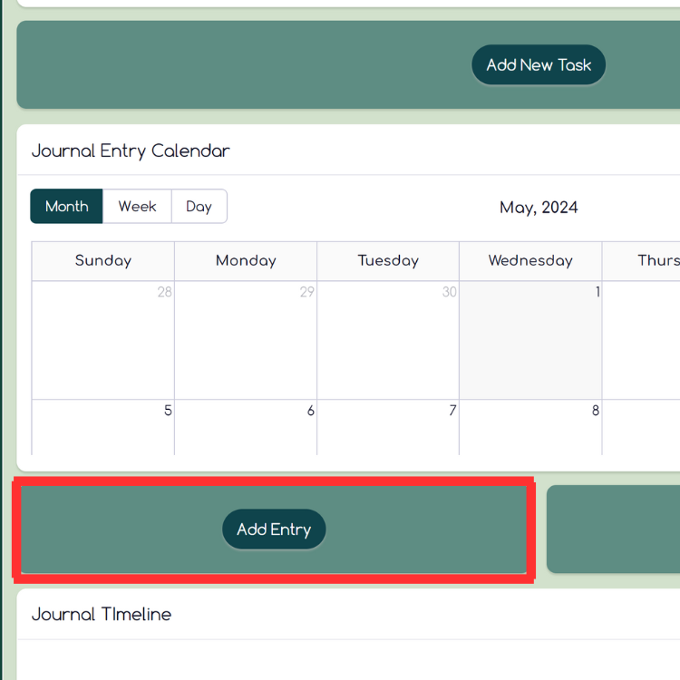

Topic Menu
How To Add A Journal Entry
Click on the "Add Entry" button under the "Journal Entry Calendar. After filling out your journal entry and submitting, click on the "X" in the top right corner to return to the homepage.
*Now that you have a journal entry submitted, you will be able to access "All Journal Entries".
How To Use All Journal Entries

Once you click on the "All Journal Entries" button, a window of all your submitted entries will pop up. The date of the entry will be on the left and the title you gave that moment will be displayed on the right. Click on a moment to return to it. It will have all information displayed about that moment for you to see.
*You can also edit or delete your moments as you would like.